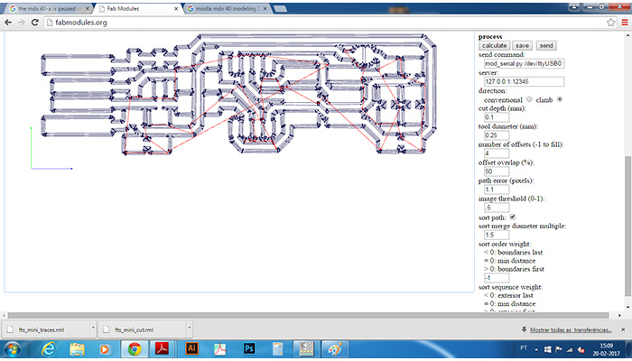
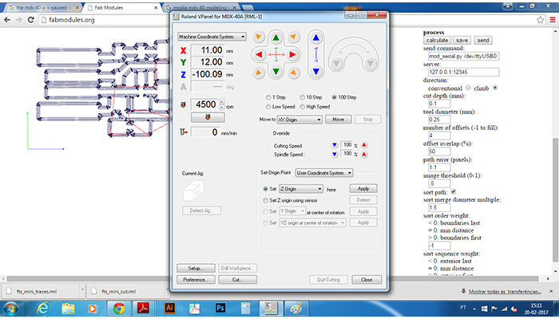
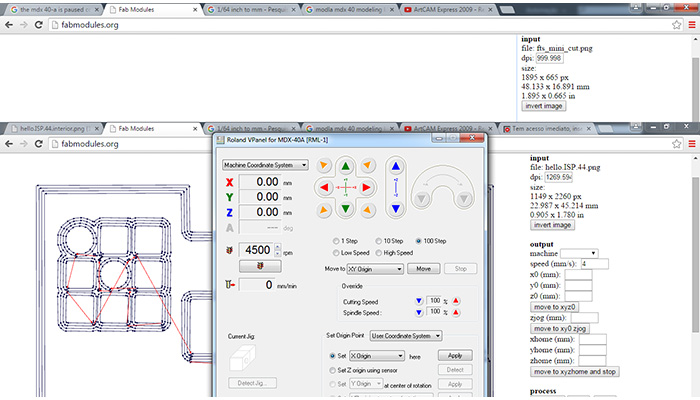
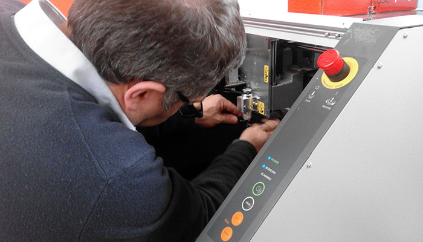

Assignment is to mill the board, stuff it with components and program it.
Fab ISP
The FabISP is an in-system programmer for AVR microcontrollers, designed for production within a FabLab.
That is, it allows us to program the microcontrollers on other boards we make, using nothing but a USB cable and 6-pin IDC to 6-pin IDC cable. It's based on the USBtiny and V-USB firmwares, which allow the ATtiny44 to perform USB communication in software. Programming can be done through avrdude.
The schematic (PDF) is super simple: USB connector, ATtiny44, and 6-pin ISP header, with assorted passive components. I started with the Eagle files for the USBtinyISP, although there's almost nothing left of it. Most of the parts for the FabISP are in the FabLab inventory. Exceptions include the Mini-B USB connector (SparkFun, Digi-Key), 12 MHz crystal (Digi-Key), and 18 pF capacitors for the crystal (Digi-Key).
PCB Fabrication
I choose Brian "FabTinyISP Minimal", a Bas Zaerc's ISP with few modifications tutorial. I choose this because i liked its shape, and in our group we decided to make 2 diferent FabISP's. After reading a while i come to some conclusions:
Less components needed
The LEDS facilitate usage
Easy way of removing the bridge/jumpers
Practical use in USB slot
I started by downloading the traces and the outline cutout.
I used Fabmodules HTML5 to get the clearance an cutting paths. Here are the steps i followed:
input format --> image (.png) --> select the png file
output format --> Rolland mill (.rml)
Process --> PCB Traces (1/64)
Then i changed a few parameters, as seen on the picture below, for better results. I changed the z home (mm): to 6mm for the jog in the end of the milling go up for a safe Z of 6mm, otherwise the PCB could get damaged.
Process:



Production process:
Change tool

{kind=link}
{kind=link}
{kind=link}
{kind=link}
{kind=link}
{kind=link}
{kind=link}
{kind=link}
{kind=link}
{kind=link}
{kind=link}